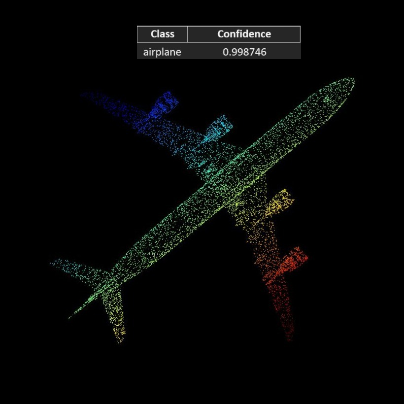

IEEE/CVF Winter Conference on Applications of Computer Vision (WACV) 2026
TopoRec: Point Cloud Recognition Using Topological Data Analysis
TopoRec describes the shape of a 3D point cloud with topological data analysis and uses that description to recognize the object it came from. I co-authored the paper with faculty at UNF as part of my research on LiDAR-based 3D object classification.